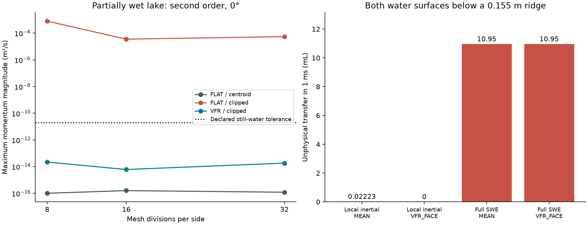
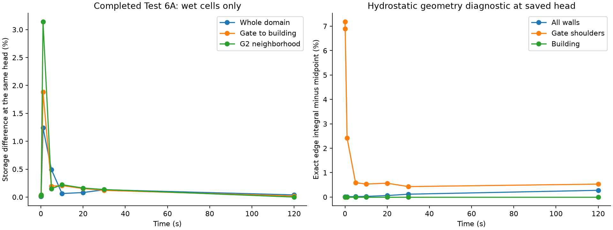

Partially wet banks, wall pressure and geometric crest isolation
Test 6A follow-up · 26 October 2026 · Completed diagnostic audit
The audit identifies a qualification gap, not the cause of G2's mismatch. Planar cell storage (VFR) preserves the tested partially wet lakes, but the full shallow-water solver passes water over a dry geometric ridge. Its VFR_FACE setting does not change that result. VFR is therefore not promoted as a Test 6 fix.
What was tested
The same immutable corrected engine image used for the latest Test 6A reassessment is linked directly into a native harness. There are 108 lake/release cases: 8, 16 and 32 divisions per side; irregular triangular grids rotated 0° and 64°; first- and second-order reconstruction; default flat storage with centroid initialization, flat storage with geometrically exact water volumes, and VFR with those same exact volumes. The plane rises 0.155 m per 0.34 m, matching the benchmark bank slope. The test footprint is 1 × 0.68 m. It is an independent control, not the laboratory geometry.
The solver uses full SWE, global RK2 selected by Smagorinsky Cs=0, CFL 0.4, dry depth 0.0001 m and maximum step 0.002 s. Bed friction, wall drag and Coriolis are off. Closed lake tests run 0.2 s; a bank release runs 0.5 s. The preregistered lake tolerance is 2×10⁻¹¹ for head and momentum; volume tolerance is 2×10⁻¹¹ m³. There is no analytical accuracy claim for the release. An adaptive 24-case ridge matrix supplies an independent physical blocking condition and an overtopping positive control. Those 1 ms checks use a 0.0001 s maximum timestep and the default requested CFL 0.7 (automatically capped to 0.5 for full SWE); their log records that cap.
Storage and still-water results
The volume oracle clips each triangle at the water surface, triangulates the wet polygon, and integrates linear depth exactly. It is independent of the engine's storage formulas. Five additional Python tests compare analytical storage with independently clipped polygons and edge pressure with Gaussian quadrature.
All 108 runs finish with finite, nonnegative depths and conserved volume; maximum volume error is 3.99e-17 m³. All 36 fully wet lake cases remain still. All 12 VFR shoreline lakes preserve their physical surface and zero momentum. The 12 flat-storage lakes initialized with exact physical volumes produce currents up to 0.03050 m/s. The default centroid-initialized shoreline lakes also remain still, but contain a different water volume: at the coarsest grid, 0.01081677 rather than the planar analytical 0.01096774 m³ (1.38% low). This is a geometry/closure distinction; a well-balanced discrete lake alone does not prove that its shoreline geometry is exact.
| Condition | Storage / initialization | Cases | Maximum |q| (m²/s) | Interpretation |
|---|
| fully_wet_lake | FLAT / centroid | 12 | 2.17e-15 | Physical lake preserved |
| fully_wet_lake | FLAT / clipped | 12 | 2.3e-15 | Physical lake preserved |
| fully_wet_lake | VFR / clipped | 12 | 2.47e-15 | Physical lake preserved |
| shoreline_lake | FLAT / centroid | 12 | 1.58e-16 | Still; physical shoreline volume differs |
| shoreline_lake | FLAT / clipped | 12 | 0.000813 | Physical lake not preserved |
| shoreline_lake | VFR / clipped | 12 | 3.55e-14 | Physical lake preserved |
| bank_release | FLAT / centroid | 12 | 0.0445 | No transient accuracy reference |
| bank_release | FLAT / clipped | 12 | 0.0445 | No transient accuracy reference |
| bank_release | VFR / clipped | 12 | 0.0446 | No transient accuracy reference |

A dry ridge exposes the missing connection
Two triangles share an edge whose two endpoints are both 0.155 m high; the outer vertex of each triangle is at zero elevation. All external edges are closed walls. Water surfaces are 0.10 or 0.12 m on the left and 0.02 m on the right. Both are below the complete shared crest, so physical transfer must be zero. Initial volumes are exact clipped volumes, and VFR reconstructs the intended surfaces.
Over 0.001 s, full SWE transfers about 4.823×10⁻⁶ m³ for the 0.10 m head, and 1.095×10⁻⁵ m³ for the 0.12 m head. The result occurs with both reconstruction orders and is unchanged by MEAN versus VFR_FACE. All eight full-SWE below-crest tests fail the 2×10⁻¹¹ m³ isolation tolerance. Local inertial with VFR_FACE blocks all four below-crest cases. Its MEAN option also leaks in the two 0.12 m cases, demonstrating why centroid-bed tests alone are insufficient. All eight 0.20 m overtopping positive controls transfer water, as expected. These controls establish blocking and transfer direction, not accurate overtopping discharge.
Source inspection explains the full-SWE result: its reconstructed face kernel uses an equivalent bed derived from head and mean depth. The full-SWE interior face path does not apply the endpoint-based VFR_FACE gate. For a partially wet cell, equivalent bed and the actual shared edge crest can differ substantially. The existing VFR_FACE implementation covers the local-inertial path; enabling it is not an implementation of integrated full-SWE shoreline flux.
Wetted wall width and pressure
For an edge of length L with linear bed z(s), wetted width is ∫1[η>z(s)] ds, and hydrostatic force divided by density is (g/2)∫max(η−z(s),0)² ds. For a partially wet edge rising by Δz, these are L(η−z_low)/Δz and gL(η−z_low)³/(6Δz). For a fully wet sloping edge, midpoint pressure underestimates the exact integral by gL(Δz)²/24. A midpoint may even be dry while part of the edge is wet.
These identities do not justify replacing only the wall pressure term: the existing kernel couples pressure to a discrete bed-source correction. Changing one term alone can destroy the still-water balance. A qualified correction must treat storage, wetted face flux, wall pressure and bed source consistently.
How large is the geometric difference in the completed Test 6A?
Diagnostics use the finalized 120-second corrected result, with no new Test 6 simulation. Only cells with mean depth greater than the declared 0.0001 m dry threshold contribute; dry-cell head is not interpreted as a physical water surface. At 20 s, 2,050 such cells intersect their planar bed. Evaluating exact planar storage at their saved heads adds 0.0134907 m³, or 0.0812% of wet-cell stored volume. In the G2 neighborhood (2≤x≤3.3 m, full width), the difference is 0.000410419 m³, or 0.1617%. These are geometry changes at fixed head, not mass-conservation errors. The early differences are larger: among the sampled times, G2-neighborhood storage differs by as much as 3.139% at 1 s, and gate-shoulder pressure quadrature by 7.178% initially. The figures retain the full sampled duration; the 20-second summary is not an upper bound.
| Region at 20 s | Partly wet wall edges | Wetted length (m) | Exact−midpoint (%) |
|---|
| all | 4 | 28.9337 | 0.0620 |
| gate_shoulders | 2 | 2.2105 | 0.5676 |
| building | 0 | 2.4000 | 0.0000 |
| outer_sides | 0 | 13.5000 | 0.0000 |
The building's 64 wall edges have constant bed elevation and no partially wet edge at 20 s. The gate shoulders have two partially wet wall edges. The reported pressure percentages compare the exact linear-bed hydrostatic integral with a midpoint evaluation at each saved cell head. They are scalar sums, not net forces and not the solver's reconstructed wall/bed momentum ledger. The all-wall difference is about 0.0620%; gate shoulders about 0.5676%. Small aggregate differences do not rule out local front sensitivity, but this audit does not show a missing building-wall pressure effect that explains G2.

Decision and next implementation gate
No physics coefficient, canonical deck, regression anchor or engine default is changed. No new measured-data score is claimed; the previous full comparison and UK reporting panels remain the current result. There is no direct comparison with other hydraulic models.
- Develop a consistent full-SWE planar-bed treatment that couples volume/head closure to wet portions of interior and wall faces and a compatible bed source. Retain the current path for its qualified flat-bed regime.
- Require zero below-crest transfer, correct overtopping behavior, fully and partially wet lake balance, positivity, conservation, the existing 12 reconstruction tests and 16 analytical controls before accepting a candidate. Add transient reference cases; the present release checks are stability checks only.
- Then repeat corrected-operator jump-normal and momentum/energy diagnostics and a declared Test 6A comparison. Preserve initial-condition semantics explicitly: matching mean depth, water level and volume simultaneously is generally impossible when changing the storage representation.
Reproduction and evidence
Declared design and adaptive extension · Machine-readable outcomes, including failures · Executable and source identities · 108 native cases · 24 ridge cases · Storage by region/time · Wall integrals by region/time · Geometry diagnostic scope · Five independent oracle tests
The source directory contains the native harness, its build definition, the explicit source/library runner, geometry diagnostics, oracle checks and report generation. Run the native runner with --source, --library and --output pointing to an ABI-compatible engine source tree, the intended engine library and a reviewable output directory. The recorded result uses the frozen corrected image, not the concurrently edited working checkout. The known unrelated porewater failure from the earlier qualification remains; this audit makes no new full-suite pass claim.